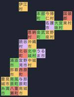

freee Developers Hub
https://developers.freee.co.jp/
freee株式会社の開発者（エンジニア, デザイナー,プロダクトマネージャー, etc...）によるブログです
フィード
freee PSIRTの風景：Dependabot alertの調査 21
21
freee Developers Hub
こんにちは、PSIRTのWaTTsonです。 昨年の夏頃に、「Dependabot alertをSlackに通知して、トリアージ運用に役立てる仕組みを作ってみた」という記事を投稿しました： developers.freee.co.jp ここでは、新しく報告されたDependabot alertをSlackに通知し、Jiraチケットを作成してPSIRTメンバーをアサインし、トリアージを行って各開発チームのチャンネルにメッセージを送信する、という仕組みについて説明しました。 今回は、この中でPSIRTメンバーがトリアージをする時にどういう風なことをしているのかを書いてみたいと思います。 過去に私自…
3日前

『勝手にコードゴルフ王決定戦 in RubyKaigi 2024』を開催しました！ - 前編 2
freee Developers Hub
RubyKaigi 2024 で freee が出展していたブースでは、コードゴルフ大会を開催しました。沖縄の地図が出力されるスクリプトを作るまでのプロセスを説明しています。
4日前
CloudNative Days Summer 2024 に参加しました！！ 4
freee Developers Hub
はじめに こんにちは！ 6/15 に札幌で開催された CloudNative Days Summer 2024 (CNDS) に参加してきたので、その様子をお伝えします！ freee からは SRE Platform Delivery チームの akito と tetora が参加しました。 会場：札幌コンベンションセンター 前夜祭の様子・当日会場の雰囲気など CNDS の前夜祭が催されていたので、それにも参加してきました。 ジンギスカンの食べ放題で最高に美味しかったです！ 同じテーブルに CNDS のスポンサーでもある GitLab のソリューションアーキテクトの方が2名おられ、SRE や開…
7日前

【謎解き】freee 技術の日 2024 謎解きの解説【ネタバレ】
freee Developers Hub
この記事はfreee 技術の日イベントDay2(2024年6月1日)に配布された謎解きコンテンツの解説・あとがきです。 freee謎解き部のkinchanです。 ※ 本職はQAです。謎解き×QAの記事（おまけ謎つき）謎解き制作にfreeeQAプロセスを適用してみた - freee Developers Hubも書いてるのでぜひ見てね！ freeeでは先日、5/31と6/1に freee 技術の日 というテックカンファレンスが開催されました。 イベントの内容としては、エンジニアリング、プロダクトマネジメント、デザイン、QAなど、freeeのあらゆる技術をご紹介するものでした。 本記事は、イベント…
1ヶ月前
rspecを音ゲーにした時の記憶がRubyKaigiで呼び起こされた話
freee Developers Hub
はじめに 2024年2月に入社した新規プロダクト開発本部のソフトウェアエンジニアの塩出 @solt9029 です。技術領域としては、主にバックエンド（Ruby on Rails）とフロントエンド（React）を用いて開発しています。 先日、2024年5月15〜17日に沖縄で開催されたRubyKaigi 2024に参加してきました。私はRuby歴4年程度なのですが、RubyKaigiは今年が初参加でした。また、国際テックカンファレンスの参加も初めてだったので、とても貴重な体験で楽しかったです。本記事では、RubyKaigi初参加の感想を述べます。 RubyKaigi 2024の会場エントランス …
1ヶ月前
未経験エンジニアがfreeeでの2ヶ月の内定者インターンを振り返る
freee Developers Hub
未経験エンジニアがfreeeでの2ヶ月の内定者インターンを振り返ります。未経験でもエンジニアになりたい学生必見です。
2ヶ月前
権限制御とは？ を freee の権限管理基盤で説明
freee Developers Hub
どうも、freee でエンジニアリングマネージャー をやっている sentokun です。 以前に私の所属しているチームで開発している権限管理基盤マイクロサービスの記事を書いたのですが、そういえば「権限制御ってなに？」という説明をしていないと思ったので、今回記事にしました。 権限制御とは？ freee の権限管理基盤が行なっている権限制御とは？を一文でまとめると以下となります。 アクセス制御ポリシーを元に、ユーザーの属性に合わせた適切なアクセス制御を行うこと というわけで、この記事は権限制御について説明しました。ありがとうございました！ … とはなりませんよね。ちゃんと一文の中の要素を分解して…
2ヶ月前
freee は RubyKaigi 2024 のプラチナスポンサーです
freee Developers Hub
freee で freee会計のエンジニア兼 DevRel をしているけむりだま (@_kemuridama) です. フリー株式会社 (以下 freee) はいよいよ来週に沖縄で開催される「RubyKaigi 2024」にプラチナスポンサーとして協賛します!! RubyKaigi 2024 キービジュアル メインサービスである「freee会計」「freee人事労務」「freee販売」をはじめとして, freee が提供しているほとんどのサービスで Ruby on Rails が採用されています. 特に「freee会計」は国内でも有数の巨大 Rails アプリケーションと知られれていると思いま…
2ヶ月前
新メンバーを受け入れる際に大事だなと思う心構え
freee Developers Hub
こんにちは、 freee でエンジニアリングマネージャーをやっている sentokun と申します。 4 月になり、新人や中途入社など新メンバーの参入など、チームの変化を感じている方も多いのではないでしょうか？ この記事では、そんな新メンバーの受け入れ時に、チームで大切にしたいと思う心構えについて記載していきます。 人と環境には相性がある！焦らずその人にあったペースで 新メンバーは、チームに参画する際とにかくできるだけ早く環境に慣れて成果を出したい！と考えると思います。特に経歴がある中途入社だと、本人は経験がある分早く成果に繋げられるはず！と考えるし、受け入れ側の視点でも、経験豊富なんだから早…
2ヶ月前
git worktreeを使ってプルリクレビューを効率化した話
freee Developers Hub
共通マスタ基盤チームにおけるソフトウェアエンジニアのyugoです。 共通マスタ基盤チームは、従業員、商品、取引先といった製品横断で利用できるマスタデータを一元管理し、ユーザーにfreeeプロダクトにおける統合体験を提供できる基盤開発をミッションとしております。 そんな共通マスタ基盤チームチームですが、製品横断で利用されるとだけあり、日々の開発フローでPRレビューの割り込みが多いです。そんな中で、開発フローにgit worktreeを導入してみて、個人的にはPRレビューの割り込み作業時に割と使いやすかったので紹介します。 git worktreeを使うに至る背景 実はfreeeで働く以前、前職で…
3ヶ月前
5月31日（金）・6月1日（土）、freee 技術の日 2024開催！
freee Developers Hub
DevBrandingチームのmaoです！ すでに公式サイトなどをご覧になった方もいらっしゃるかもしれませんが…今年もfreee 技術の日を開催します！ freee-tech-day.freee.co.jp 「freee 技術の日」って？ freee 技術の日とは、昨年2023年から始まったfreeeのテックカンファレンスです。前回は初開催ながら、オフライン・オンライン総勢726名もの方にご参加いただきました。 ASOBIBA STAGEにて行われたCEO 佐々木のオープニングセッション。場内生中継もされていました。 TAMARIBA STAGEの様子。想定以上に多くの方にいらしていただきまし…
3ヶ月前
おじいちゃんのスマホ操作を見ながら感じた認証のあり方について
freee Developers Hub
こんにちは。認証認可基盤エンジニアのてららです。 最近好きな言葉はコンフォートゾーンです。好きな食べ物はニンジンです。 猫派です。 経緯 週末、パートナーが祖父母の家に帰るということで付き添いをしてきました。 その1つの目的としてパートナーの祖父（以下、おじいちゃん）がスマートフォンを利用していたのに急にスマホアプリから認証を求められて困っている、とのことでそれの解決をしていました。 「なんとか出来ないかねぇ」ということでパートナーがおじいちゃんのスマホを触りながら操作方法を教えつつ、認証情報を探しておじいちゃんに手解きしている様子を眺めていました。 その時、“ログイン”や“ユーザーID”、知…
3ヶ月前
Playwright の waitForLoadState('networkidle') のようなメソッドを Selenium で動かす
freee Developers Hub
Chrome DevTools Protocol を使って、 Selenium でネットワークの待機を実現します。
4ヶ月前
freee にとって、いいチーム・エンジニアリングマネージャーはマジ価値につながるの？
freee Developers Hub
こんにちは、freee の 権限管理基盤マイクロサービスを開発するチームでエンジニアリングマネージャーを務めている sentokun と申します。私の現在の仕事は、もっぱらピープルマネジメントやプロジェクトマネジメントです。チームのために尽力しています！ freee には、マジ価値 というカルチャーがあります。なにがユーザーにとって真に価値のあるのか？を考え行動することを大事にしたカルチャーです。例えば freee の開発担当者であれば、ユーザーにとって使いやすいいいプロダクト機能を開発することがマジ価値に繋がるといった形です。 では、プロダクト機能を直接開発するわけではなくチームのことに尽力…
4ヶ月前
Regional Scrum Gathering Tokyo 2024に参加しました
freee Developers Hub
こんにちは、freeeの mattsun, micci, hmaruya, ひろみつ, barus です。 先日、国内最大級のアジャイル・スクラム関連のイベント「Regional Scrum Gathering Tokyo 2024（RSGT2024）」 が開催されました。freeeからもメンバーが参加したので、本記事はその参加レポートです。 目次 良いチームってなんだろう、の考えが深まった 海外コーチと1on1！ チームの改善を考える視点をこれ以上ないほどに学んだ3日間 同じチームのメンバーと場を共有できた オンラインでも得られる栄養素がある あります！！！！！！！！！！！！！！！！！！！！…
4ヶ月前
freee 会計ソフト iOS のレシート撮影カメラをリニューアルしました
freee Developers Hub
Hello, world. 会計ソフト iOS チームで開発をしている Kirk（カーク）です。 みなさまとのご縁で生きながら、コントラバスを弾くためにコードを書いています。 今回、恐らくユーザーからは念願であったであろう、レシート撮影で使用するカメラのリニューアル構想、設計、実装を担当したのでその内容を共有します。 リニューアルされたカメラ📱📸 百聞は一見にしかず、でございます。 こちらのデモ動画をご覧ください 💁♂️ < ミテネ www.youtube.com おわかりだろうか…このデモ動画内では、撮影者は手動でシャッターは押していないのです！そう、自動でレシートを認識して撮影する、自動…
5ヶ月前
freeeのエンジニア成果発表祭〜歴史と変遷〜
freee Developers Hub
こんにちは、freeeでアプリケーションエンジニアをしているossoです。 日本酒のしぼりたての季節ですね。今年も良い出会いがありました。日本酒だいすき🥴🍶 今回はfreee社内で実施しているエンジニアのエンジニアによるエンジニアのためのイベント「成果発表祭」についてお話ししたいと思います。 （「歴史と変遷」なんて大掛かりなサブタイトルをつけてしまいましたが、2022年からの2年間について語ります。笑） エンジニア成果発表祭とは 「エンジニア同士がお互いの成果を知り、成果を称賛し合う場」として、エンジニアが内発的にはじめたイベントです。 私の入社時点（2021年11月）からすでに定着しており、…
5ヶ月前
Attack Surface Management？ はじめました
freee Developers Hub
こんにちは、北海道から freee PSIRT（Product Security Incident Response Team）に参加している yu です。 今年は雪が少ないな〜と思っていたら最近ドカドカ降るようになってきて、1日デスクで集中した後に外に出ようとすると玄関のドアが雪で開かない日もありました。雪国エンジニアの各位、除雪も忘れず頑張っていきましょう！ さて、この記事では前回の記事で bucyou が紹介した開発合宿において、私と同僚の tomoya さんで取り組んだ freee の Attack Surface Management（以下、ASM）について紹介します。 ASM とは…
5ヶ月前
2023年も開発合宿を開催しました
freee Developers Hub
こんにちは、関西拠点にて freee販売の開発を行っております、bucyou (ぶちょー) です。2023年も freee Developers Hub をご覧いただきありがとうございました。2024年も引き続き freee での技術的な知見や、カンファレンスレポートをお送りしてまいりますので何ぞとよろしくお願いいたします。 さて、昨年は Advent Calendar の真っ只中でお知らせ出来ていなかった、2023年の開発合宿についてのご報告です。 過去の開発合宿の記事一覧です。 2022年も開発合宿を開催しました！ - freee Developers Hub 2021年も開発合宿を開催し…
6ヶ月前
年末大掃除と来年の抱負（AWSの大掃除とfreeeのFinOpsの未来）
freee Developers Hub
メリークリスマス！！この記事はfreee 基盤チーム Advent Calendar 2023 の最終日（25日目）の記事です。 はじめに SRE 統制チームのYです。今回は、最終日ということもあり、年末大掃除と来年の抱負と題して、AWSの大掃除とfreeeのFinOpsの未来を紹介します！ oracleとYの共同執筆となり、大掃除はoracleが、来年の抱負はYが担当します。 1. 年末大掃除（AWSの大掃除） SRE 統制チームでは CFM (Cloud Financial Management) の取り組みを進めています。 コスト効率を上げる手法の一つとして、不要なリソースを削除すること…
6ヶ月前
大崎に引越ししてきたので、デスク環境をアップグレード（副題_2023年買ってよかったもの）
freee Developers Hub
こんにちは！freee 会計でエンジニアをしている 🇰🇷 韓国出身の jason です。 この記事は freee Developers Advent Calendar の25日目🎄です。 11月に freee にジョインしてきて、freee 2ヶ月目のエンジニアになりますが、 転職に伴い、前からやりたいと思っていた徒歩通勤実現のために大崎ネスト*1の周辺に引っ越してきました。 余談ですが、freee では 「柔軟な働き方・働く環境」のために 住宅手当や借上社宅のような福利厚生を準備しているので、 そんなに難しくなく入社直後、会社の近くに引っ越すことができました。 いきなり 📦 引っ越しの話をし…
6ヶ月前
QAマネージャーやってみての失敗談
freee Developers Hub
こんにちは。freeeでQAのマネージャーをやってるでーにしです。 freee QA Advent Calendar2023 25日目です。QAマネージャーをしていて、あるあるアンチパターンを見事に踏んでいったので、振り返って良いお年を迎えたいと思います。 失敗①運用を考えずに自動テストを作ってしまう（2017年くらい） freeeではいくつか自動テストがありますが、一番運用が大変なのはE2Eテストになります。 E2Eテストについての詳細は、以下の記事をご参照ください。 developers.freee.co.jp その運用が大変なE2Eテストを運用を考えずに作ってしまいました。 当時の自分の…
6ヶ月前
freeeサインのAWSリージョンを移行した話
freee Developers Hub
この記事はfreee 基盤チーム Advent Calendar 2023 の24日目の記事です。 はじめに はじめまして！ kanno と申します。freee SREで、freeeサインのプロダクトSREを担当しておりAWSインフラの改善や運用を主に行っています。初回の投稿で拙い文章になりますが、直近で実施したfreeeサインのAWSリージョンを移行した話を書こうと思います。 背景 元々、freeeサイン(旧ninja-sign)はHeroku上にアプリケーションをデプロイしていましたが、2022年の年末頃にAWSに移行しています。その際、元々のHerokuがus上で稼働していたことが影響し…
6ヶ月前
新人研修でHardening! 2023
freee Developers Hub
こんにちは。freee PSIRTでマネージャーをやっています、ただただし（tdtds）です。この記事はfreee Developers Advent Calendar 2023 24日目です。昨日は最近freeeにグループジョインしたBundleのkouheiさんによる「Bundleの3年間をライブラリで振り返る」でした。 さて、「freeeでは新卒研修でHardeningをやってるらしい」という話は界隈ではちょっとは知られているものの、その内幕が伺えるのは、まだPSIRTがCSIRTから独立する前の2018年の記事しかありませんでした。 developers.freee.co.jp あれか…
6ヶ月前
マインドマップを使ったテスト分析を開発チームとQAチームでやってみた
freee Developers Hub
こんにちは freee会計のQAエンジニアをしているsugenoです。 freee QA Advent Calendar 2023 24日目です。 私は2023年4月にfreeeにQAエンジニアとして入社しました。 今回は、会計チームでマインドマップを用いたテスト分析を始めてみたので実際やってみてどうだったかを記事にしたいと思います。 マインドマップを始めた経緯 QA業務をやっていく中で、私は会計のドメイン知識も浅くQA業務をするにあたり不安感を抱えており、開発チームの方にどのようにキャッチアップしてるかを相談したところ、コードを見つつ、各々が仕様をキャッチアップしてるとのことでした。 そのた…
6ヶ月前
もしもの時のためのログの保存と解析
freee Developers Hub
この記事はfreee 基盤チーム Advent Calendar 2023 の23日目の記事です。 23日目の記事なのに、現在の時刻は12/23 23:55です。 PSIRT*1のeijiです。 もしもの時に備えてログを取りまくり、事が起きればログの海に溺れる毎日ですが、今年もいろいろありました。 TL;DR もしもの時のために、AWS上で「ログを保存する」、「ログを解析する」を整理しておきます。 前置き freeeでは、毎年新人の皆さんにHardeningを実施しています。 flagを見つけたら点数を稼げるCTF*2とは異なり、incident responseを模したHardeningでは…
6ヶ月前
Bundleの3年間をライブラリで振り返る
freee Developers Hub
こんにちは。freee株式会社でBundleの開発を行っている kouhei です。 この記事は freee Developers Advent Calendar 2023 の23日目の記事です。 Bundleは、サービス提供からそろそろ3年が経とうとしているサービスで、もともとはfreeeにグループジョインしたWhy株式会社が提供していたサービスです。 私自身もまた、グループジョインに伴いfreeeに入社し、freeeで引き続きBundleの開発に携わっています。 Bundleのサービス提供開始からfreeeにグループジョインするまでの数年は、実はフルタイムで働くエンジニアは私だけという状況…
6ヶ月前
Webサービスの歩き方 - シン・境界値分析
freee Developers Hub
京王線 16:27 各停 調布 32768両編成 こんにちは。freeeでQAのマネージャをやってるuemuです。freee人事労務とグローバル開発のQAをメインで担当しています。 これは、freee QA Advent Calendar2023 23日目の記事になります。 はじめに みなさん、境界値分析はやってますか？ 普段、QA業務を行っている人だったら、やったことがない人はいないでしょう。「そんなの知ってるよ」「いつもやってるよ」という人がほとんどだと思いますが、今回は普段より少し広い視野で境界値分析をやってみたいと思います。 ちょっと話が脱線しますが、私はブラタモリという番組をよく観ま…
6ヶ月前
複数の検証環境でのDB相乗り化
freee Developers Hub
この記事は freee 基盤チーム Advent Calendar 2023 の 22 日目の記事です。 こんにちは、freee のDBRE (Database Reliability Engineering) で ジャーマネ（マネージャー）としてDBRE組織を運営管理しているJuni です。 今回は何故integration環境*1を相乗り化してきたのかという話しをしていきたいと思います。 始まる前に、タイトルにも書いてある「DB相乗り」に関して一度定義していきましょう。 DB相乗りとは、複数の論理Databaseを1つの物理cluster内にまとめて乗せておく事です。 何故integrat…
6ヶ月前
新卒2年目でマネージャーになってから1年がたって思うこと
freee Developers Hub
この記事は freee Developers Advent Calendar 2023 22日目です。 —— freee申告の開発チームの1つでマネージャーをしている nippori です！ 僕は今年(2023年)の1月から現在のチームのマネージャーを勤めていて、来月でちょうど1年が経とうとしているので、時系列で振り返ってみようと思います。 2021年4月 新卒でfreeeに入社しました。 2022年11月 freee には「異動戦国」という制度があり、年に1回希望するチームに異動の立候補ができます。 この異動戦国への立候補は基本的に任意ですが、freee に新卒で入社し3年目になる人は必須参…
6ヶ月前